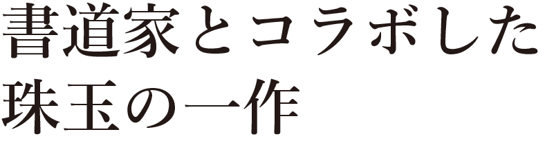

「あかさたなはまやらわ」
僕たちは日々、文字や言葉で踊っている？
いや、踊らされている？
あの人の言ったこと、この人の言ったこと、誰々の言ったこと。
僕たちはそれを信頼しすぎてしまう。よりどころを求めて。
「あかさたなはまやらわ」
Aメロの頭文字を縦読みすると、「あかさたなはまやらわ」。
文字と音は曲の中で縦横無尽に遊び回る。遊ぶ。遊ぶ。
50音は重なって、文字や言葉になる。
言葉は嘘をつき、言葉は空を切り、言葉はナイフを突きつける。
「あかさたなはまやらわ」
つまりこのきょくは
まだまだだれかの言葉をしんらいしすぎてるぼくらがいるような
んー、ぼくらは言葉におどりおどらされているような
なんにも
いみのないうそのきょくかもしれません。
うそもまことも。
ただ、言葉できみにといかけているだけ。なのかもしれません。

今作は若干19歳の新進気鋭の作家 堀Jのミュージックビデオデビュー作となる。
堀Jはその若さながら数々の賞を受賞している実力派で、今作では彼の得意分野である
ドキュメンタリーの要素が散らばっている。(詳しくはインタビューにて)
言葉遊びをテーマとしているこの曲、そのプロモーションビデオは
「言葉のプロ」
書道家の杉山 泉さんとコラボレーションしている。
杉山さん渾身の筆と堀J、
そしてderonderonderonが融合した作品、
とくとご覧あれ。